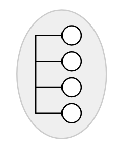
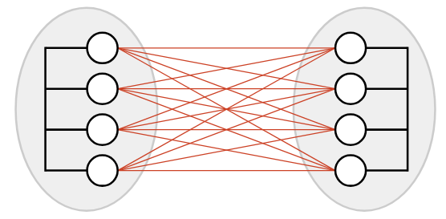
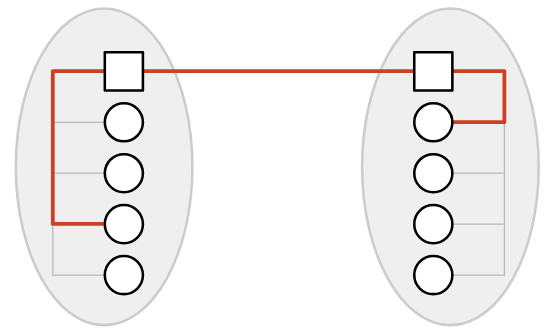
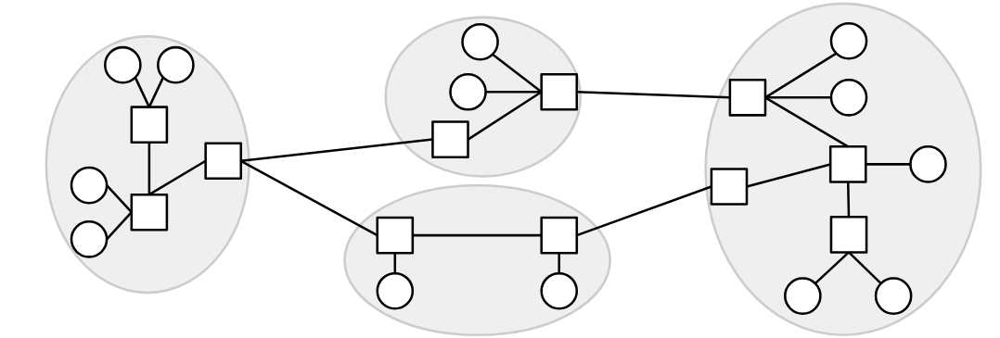
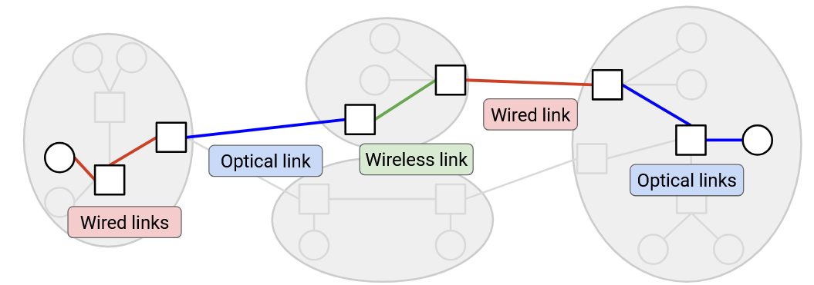
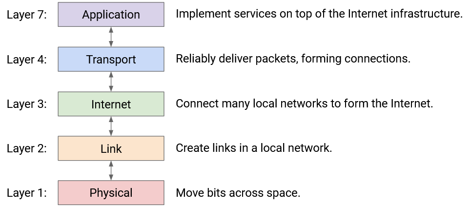

Layers of the Internet
Layer 1: Physical Layer (Tầng vật lý)
Trong phần này, chúng ta sẽ xây dựng Internet theo hướng bottom-up (từ dưới lên), bắt đầu với các khối cơ bản và kết hợp chúng để hình thành hạ tầng Internet. Chúng ta sẽ sử dụng hệ thống bưu điện như một phép so sánh xuyên suốt, vì nó có nhiều lựa chọn thiết kế tương đồng với Internet.
Trước tiên, chúng ta cần một cách để gửi tín hiệu qua không gian. Trong hệ thống bưu điện, điều này có thể là một người đưa thư, dịch vụ Pony Express, xe tải, chim bồ câu đưa thư, v.v.
Trong Internet, chúng ta tìm cách truyền bit (1 và 0) qua không gian. Công nghệ có thể là điện áp trên dây dẫn điện, sóng vô tuyến không dây, xung ánh sáng qua cáp quang, v.v. Có cả một lĩnh vực electrical engineering (kỹ thuật điện) chuyên nghiên cứu việc truyền tín hiệu qua không gian, nhưng chúng ta sẽ không đi sâu vào chi tiết trong khóa học này.
Layer 2: Link Layer (Tầng liên kết)
Trong phép so sánh, khi đã có cách gửi dữ liệu qua không gian, chúng ta có thể dùng khối cơ bản này để kết nối hai ngôi nhà. Thậm chí, chúng ta có thể kết nối tất cả các ngôi nhà trong một thị trấn.
Trong Internet, một link (liên kết) kết nối hai máy. Liên kết này có thể sử dụng bất kỳ loại công nghệ nào (có dây, không dây, cáp quang, v.v.). Nếu chúng ta dùng các liên kết để kết nối nhiều máy tính gần nhau (ví dụ: tất cả máy tính trong UC Berkeley), chúng ta sẽ có một Local Area Network (LAN) (mạng cục bộ).
Ở Layer 2, chúng ta cũng có thể nhóm các bit thành các đơn vị dữ liệu gọi là packet (gói tin – đôi khi ở tầng này gọi là frame), và xác định điểm bắt đầu và kết thúc của một gói tin trong tín hiệu vật lý. Chúng ta cũng có thể xử lý các vấn đề như nhiều người cùng lúc sử dụng chung một dây để gửi dữ liệu.
Layer 3: Internet Layer (Tầng Internet)
Giờ đây, chúng ta đã có cách kết nối mọi người trong một khu vực cục bộ, nhưng nếu hai người ở hai khu vực khác nhau muốn giao tiếp thì sao? Một cách tiếp cận là thêm nhiều liên kết giữa các mạng cục bộ khác nhau, nhưng điều này không hiệu quả (đặc biệt nếu hai mạng ở hai châu lục khác nhau).
Thay vào đó, một cách thông minh hơn là đặt một bưu điện trong mỗi mạng, và chỉ cần kết nối hai bưu điện này. Khi ai đó trong mạng A muốn liên lạc với ai đó trong mạng B, họ gửi thư tới bưu điện của mạng A. Bưu điện này sẽ chuyển thư tới bưu điện của mạng B, và bưu điện B sẽ giao thư tới đích.
Trong Internet, bưu điện nhận và chuyển tiếp thư được gọi là switch hoặc router.
Nếu chúng ta xây thêm các liên kết giữa các switch, chúng ta có thể kết nối các mạng cục bộ. Với đủ liên kết và mạng cục bộ, chúng ta có thể kết nối mọi người trên toàn thế giới, tạo thành Internet.
Một câu hỏi cần trả lời là: Làm thế nào để tìm đường đi qua mạng? Khi một switch nhận gói tin, làm sao nó biết phải chuyển tiếp gói tin đi đâu để đến gần đích hơn? Đây sẽ là trọng tâm của phần routing (định tuyến).
Chúng ta cũng cần đảm bảo rằng các liên kết này có đủ capacity (dung lượng) để truyền dữ liệu. Đây sẽ là trọng tâm của phần congestion control (kiểm soát tắc nghẽn).
Bức tranh này cho thấy hạ tầng Internet, nhưng trong khóa học này, chúng ta cũng sẽ nghiên cứu các operator (nhà vận hành) quản lý hạ tầng. Trong phép so sánh, đây là những người xây dựng và quản lý bưu điện. Trên Internet, các operator là Internet Service Provider (ISP) như AT&T, Amazon Web Services, hoặc UC Berkeley, những đơn vị sở hữu và vận hành hạ tầng Internet. Ngoài hạ tầng phần cứng và phần mềm, chúng ta cần xem xét các tổ chức này như những doanh nghiệp và tổ chức thực tế, cân nhắc động cơ kinh tế và chính trị của họ. Ví dụ: nếu AT&T xây dựng một tuyến cáp quang biển, họ có thể thu phí các ISP khác khi gửi dữ liệu qua tuyến cáp này.
Network of Networks (Mạng của các mạng)
Internet thường được mô tả là một network of networks. Có rất nhiều mạng cục bộ nhỏ, và những gì diễn ra bên trong mạng cục bộ có thể được quản lý nội bộ (ví dụ: bởi UC Berkeley). Sau đó, tất cả các mạng cục bộ kết nối với nhau để tạo thành Internet.
Trong mạng, các liên kết khác nhau có thể sử dụng công nghệ Layer 2 khác nhau. Một số liên kết có thể dùng Ethernet có dây, số khác dùng cáp quang hoặc công nghệ di động không dây. Ở Layer 2, chúng ta tìm cách gửi một gói tin trong mạng cục bộ, qua các liên kết trong mạng đó, sử dụng công nghệ cụ thể của mạng. Sau đó, ở Layer 3, chúng ta dùng khả năng gửi gói tin qua các liên kết như một khối xây dựng để gửi gói tin đi bất cứ đâu trên Internet. Khi gói tin nhảy qua nhiều mạng khác nhau, nó có thể được truyền qua nhiều loại liên kết khác nhau.
Trong phép so sánh, chúng ta thấy sự khác biệt giữa home (nhà) và post office (bưu điện). Các ngôi nhà gửi và nhận thư cho nhau. Các bưu điện không gửi hoặc nhận thư của riêng mình, mà giúp kết nối các ngôi nhà khác.
Trên Internet, end host là các máy (ví dụ: server, laptop, điện thoại) giao tiếp qua Internet. Ngược lại, switch (còn gọi là router) là máy không gửi hoặc nhận dữ liệu của riêng mình, mà tồn tại để giúp các end host giao tiếp với nhau. Ví dụ về switch là router trong nhà bạn, hoặc các router lớn hơn do ISP triển khai (ví dụ: AT&T).
Trong các ghi chú này, chúng ta thường vẽ end host dưới dạng hình tròn, và router dưới dạng hình vuông.
Layers of Abstraction (Các tầng trừu tượng)
Khi xây dựng Internet, bạn có thể nhận thấy rằng chúng ta đã chia nhỏ vấn đề thành các nhiệm vụ và abstraction (trừu tượng) nhỏ hơn.
“Modularity based on abstraction is the way things are done.” – Barbara Liskov, Turing Lecture.
Đây là cách chúng ta xây dựng và duy trì các hệ thống máy tính lớn. Modularity (tính mô-đun) đặc biệt quan trọng với Internet vì Internet bao gồm nhiều thiết bị (host, router) và nhiều thực thể trong thế giới thực (người dùng, công ty công nghệ, ISP), và việc mọi người đồng ý về cách phân chia nhiệm vụ là yếu tố giúp Internet hoạt động ở quy mô lớn.
Một lợi thế lớn của cách tiếp cận phân tầng và network-of-networks là mỗi mạng có thể tự quyết định cách di chuyển dữ liệu. Ví dụ: khi gói tin của bạn di chuyển qua các hop trên Internet, một số liên kết có thể dùng công nghệ không dây, số khác dùng công nghệ có dây. Các giao thức tầng thấp hơn có thể thay đổi qua các hop khác nhau, nhưng giao thức Layer 3 vẫn hoạt động.
Phân tầng cũng cho phép đổi mới diễn ra song song. Các cộng đồng khác nhau (ví dụ: nhà thiết kế chip phần cứng, lập trình viên phần mềm) có thể đổi mới ở các tầng khác nhau.
Layer 3: Best-Effort Service Model (Mô hình dịch vụ nỗ lực tối đa)
Có vẻ như chúng ta đã xây dựng được một hệ thống có thể gửi dữ liệu đi bất cứ đâu trên thế giới, vậy tại sao không dừng lại ở đây? Vẫn còn hai vấn đề ở Layer 3 mà chúng ta cần giải quyết.
Vấn đề đầu tiên liên quan đến service model (mô hình dịch vụ) của Layer 3. Nếu bạn sử dụng hạ tầng Layer 3 để gửi thông điệp qua Internet, mô hình dịch vụ mà mạng cung cấp cho bạn – với tư cách là người dùng – là gì? Bạn có thể coi mô hình dịch vụ như một hợp đồng giữa mạng và người dùng, mô tả những gì mạng hỗ trợ và không hỗ trợ.
Ví dụ về các mô hình dịch vụ thực tế có thể bao gồm:
- Mạng đảm bảo dữ liệu sẽ được giao.
- Mạng đảm bảo dữ liệu sẽ được giao trong một khoảng thời gian nhất định.
- Mạng không đảm bảo giao dữ liệu, nhưng cam kết báo lỗi nếu thất bại.
Các nhà thiết kế Internet đã không hỗ trợ bất kỳ mô hình nào trong số đó. Thay vào đó, Internet chỉ hỗ trợ best-effort (nỗ lực tối đa) trong việc truyền dữ liệu. Nếu bạn gửi dữ liệu qua Layer 3, Internet sẽ cố gắng hết sức để giao nó, nhưng không có gì đảm bảo dữ liệu sẽ được giao. Internet cũng sẽ không cho bạn biết liệu việc giao có thành công hay không.
Tại sao các nhà thiết kế lại chọn một mô hình dịch vụ “yếu” như vậy? Một lý do chính là việc xây dựng mạng đáp ứng các yêu cầu yếu hơn này dễ dàng hơn rất nhiều.
Layer 3: Packets Abstraction (Khái niệm trừu tượng gói tin)
Cho đến nay, ở Layer 3, chúng ta vẫn đang nghĩ về việc gửi từng thông điệp qua Internet một cách độc lập. Nói một cách chính xác hơn, đơn vị dữ liệu cơ bản được truyền ở Layer 3 là packet (gói tin) – một khối byte nhỏ di chuyển qua Internet, bật qua các router (bộ định tuyến) như một đơn vị duy nhất.
Vấn đề thứ hai ở Layer 3 là: Packet bị giới hạn về kích thước. Nếu ứng dụng có một lượng dữ liệu lớn cần gửi (ví dụ: một video), chúng ta cần chia nhỏ dữ liệu đó thành nhiều packet và gửi từng packet qua mạng một cách độc lập.
Với khái niệm trừu tượng packet này, chúng ta có thể xem xét “hành trình” của một packet khi nó di chuyển qua mạng:
- Sender (máy gửi) chia dữ liệu thành các packet riêng lẻ.
- Packet di chuyển qua một link (liên kết) và đến một switch (bộ chuyển mạch).
- Switch chuyển tiếp packet tới đích hoặc tới một switch khác gần đích hơn.
- Packet nhảy qua một hoặc nhiều switch, mỗi switch chuyển tiếp nó gần hơn tới đích, cho đến khi nó đến nơi.
Lưu ý rằng, do mô hình best-effort, bất kỳ switch nào cũng có thể drop (loại bỏ) packet, và không có gì đảm bảo packet thực sự đến được đích.

Layer 4: Transport (Tầng vận chuyển)
Chúng ta đã xác định hai vấn đề ở Layer 3:
- Dữ liệu lớn phải được chia nhỏ thành các packet (gói tin).
- IP chỉ cung cấp dịch vụ best-effort (nỗ lực tối đa, không đảm bảo).
Để giải quyết cả hai vấn đề này, chúng ta sẽ giới thiệu một tầng mới – transport layer (tầng vận chuyển). Tầng này sử dụng Layer 3 như một khối xây dựng và triển khai một protocol (giao thức) bổ sung để:
- Gửi lại các gói tin bị mất.
- Chia dữ liệu thành các packet.
- Sắp xếp lại các packet đến sai thứ tự.
- (Cùng nhiều tính năng khác.)
Giao thức tầng vận chuyển cho phép chúng ta ngừng suy nghĩ ở mức packet riêng lẻ và bắt đầu suy nghĩ ở mức flow (luồng) – tức là các chuỗi packet được trao đổi giữa hai endpoint (điểm cuối).
Layer 7: Application (Tầng ứng dụng)
Việc xây dựng application layer (tầng ứng dụng) trên nền Internet là một lựa chọn thiết kế mạnh mẽ. Nếu ở các tầng thấp hơn, chúng ta xây dựng hạ tầng chỉ để truyền video giữa các end host, thì các email client (ứng dụng email) sẽ phải tự xây dựng hạ tầng riêng để truyền email. Thiết kế của Internet cho phép nó trở thành một mạng truyền thông đa dụng cho mọi loại dữ liệu ứng dụng.
Trong khóa học này, chúng ta sẽ tập trung nhiều hơn vào hạ tầng hỗ trợ tầng ứng dụng (ví dụ: người đưa thư, bưu điện) và ít hơn vào chính các ứng dụng (ví dụ: nội dung của thư). Tuy nhiên, chúng ta sẽ tìm hiểu một số application protocol (giao thức ứng dụng) phổ biến ở cuối khóa học.
Bây giờ, khi đã xem tất cả các tầng, hãy chú ý rằng mỗi tầng dựa vào dịch vụ của tầng ngay bên dưới và cung cấp dịch vụ cho tầng ngay bên trên. Ví dụ: một người viết Layer 7 protocol có thể giả định rằng họ có dịch vụ truyền dữ liệu tin cậy từ Layer 4. Họ không cần lo lắng về việc mất packet riêng lẻ, vì Layer 4 đã xử lý vấn đề này.
Hai tầng tương tác trực tiếp thông qua interface (giao diện) giữa chúng. Không có cách thực tiễn nào để bỏ qua tầng và xây dựng Layer 7 trực tiếp trên Layer 3, chẳng hạn.
Lưu ý: Bạn có thể nhận thấy chúng ta đã bỏ qua Layer 5 và Layer 6. Vào những năm 1970, khi mô hình phân tầng được tiêu chuẩn hóa, các nhà thiết kế nghĩ rằng hai tầng này là cần thiết, nhưng trong Internet hiện đại, chúng đã trở nên lỗi thời.
- Session layer (Layer 5): dự kiến dùng để tập hợp các flow khác nhau thành một session (phiên), ví dụ: tải nhiều hình ảnh và advertise để tạo thành một trang web.
- Presentation layer (Layer 6): dự kiến giúp người dùng visualize (trực quan hóa) dữ liệu.
Ngày nay, hầu hết chức năng của hai tầng này được triển khai trong Layer 7.